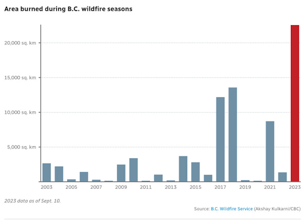
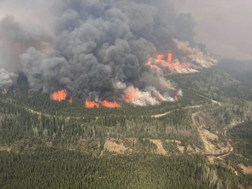

In the summer of 2023, British Columbia witnessed one of its most devastating wildfire seasons in recent history. The province, known for its stunning natural landscapes and lush forests, faced an unprecedented challenge as a series of wildfires raged across the region. The wildfires that ravaged British Columbia in 2023 were particularly fierce and widespread. By the end of the season, over 1.2 million hectares of land had been consumed by flames, making it the most extensive wildfire season on record within the past 20 years. This scale of destruction had far-reaching consequences, impacting both the environment and the people who call British Columbia home.  Why did these wildfires occur? Why were they so vicious? Extreme weather conditions, lightning strikes and human activity were the three primary factors that contributed to these wildfires. Among these three components, it is without a doubt that British Columbia’s weather conditions were the largest contributors to BC’s wildfires. The province experienced an extended period of drought, with record-high temperatures and minimal precipitation. These conditions created the perfect storm for wildfires, as the dry vegetation became highly susceptible to ignition. Consequently, not only did these wildfires have a negative impact on British Columbia's environment, but led to economic costs, health concerns and the evacuation of tens of thousands of British Colombian citizens from their homes and businesses. As the fires became more aggressive, respiratory issues aggravated by the smoke became a major health crisis, particularly for vulnerable populations like the elderly and those with preexisting conditions. As a result, citizens were urged to stay inside and avoid excess inhalation of the smoke.  Despite the dangerous and intense fires, British Columbia refused to back down. With the support of over 5,000 deployed firefighters along with evacuation plans implemented by the provincial government and international support from the United States and Australia, tireless work was put into effect to combat and put an end to these wildfires. Ideas given by the citizens of British Columbia were also taken into consideration. Lori Daniels, a professor in the Department of forest and Conservation Sciences at the University of British Columbia, mentioned that shifting away from a timber-focused approach that prioritizes conifers over less-flammable broadleaf trees and ramping up prescribed burning is key to protecting communities and supporting healthy, resilient forests. “The sooner we do it, the better,” says Daniels.